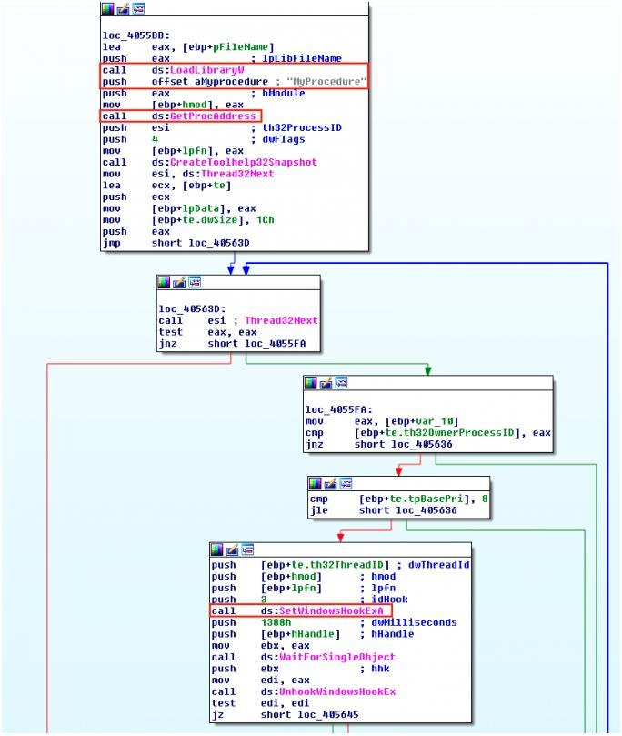

Inyección y hooking de código malicioso
El módulo 14 explicaba cómo el malware consigue volver a ejecutarse tras un reinicio. Este módulo cierra el bloque con dos capacidades muy distintas, pero igual de centrales en la funcionalidad del malware moderno: la inyección, que permite ejecutar código malicioso dentro de otro proceso legítimo para camuflarse u operar con sus privilegios, y el hooking, que permite interceptar la ejecución de una función para observar o modificar su comportamiento —la base, por ejemplo, de cualquier keylogger.
1 ¿Qué es la inyección de código?
La inyección consiste en insertar o ejecutar código malicioso dentro de otro proceso. Ejecutarse "dentro" de un proceso legítimo (por ejemplo, explorer.exe o el navegador) tiene varias ventajas para el atacante: el código malicioso hereda los privilegios y la reputación de ese proceso, resulta mucho más difícil de distinguir en una lista de procesos, y puede sobrevivir aunque el proceso que lo lanzó originalmente termine.
Las principales técnicas de inyección empleadas por el malware, que se desarrollan en las siguientes secciones, son:
DLL Injection
Fuerza a un proceso a cargar y ejecutar una DLL maliciosa.
PE Injection
Inyecta directamente el código malicioso, sin pasar por una DLL en disco.
Process Hollowing
Vacía un proceso legítimo y lo rellena con código malicioso (RunPE).
Reflective DLL Injection
Carga una DLL en memoria sin llamar a LoadLibrary.
APC Injection
Abusa de las llamadas de procedimiento asíncrono para forzar la ejecución.
Process Doppelgänging
Abusa de Transactional NTFS para sustituir un ejecutable legítimo.
2 DLL Injection
La técnica de inyección más clásica consiste en forzar a un proceso a cargar y ejecutar código malicioso mediante la inyección de una DLL en su espacio de direcciones.
El flujo seguido por el malware es el siguiente:
- Se abre el proceso objetivo.
- Se escribe la ruta (path) de la DLL maliciosa en el espacio de memoria del proceso donde se quiere inyectar.
- Se crea un hilo remoto donde se ejecutará la llamada a la función LoadLibrary, pasando como argumento la dirección de memoria donde se escribió el path de la DLL.
3 PE Injection
En este caso el malware inyecta directamente el código malicioso en el espacio de otro proceso y lo ejecuta, sin depender de una DLL almacenada en disco. Generalmente esto implica la reubicación de las direcciones del ejecutable y la resolución de las nuevas importaciones necesarias, ya que el código inyectado no pasa por el proceso de carga normal de un PE (módulo 9). PE Injection es una técnica más compleja que DLL Injection, tanto en su implementación como en su detección.
4 Process Hollowing
También conocido como RunPE, el Process Hollowing consiste en lanzar un proceso legítimo en estado suspendido y, antes de dejarlo continuar, "vaciarlo" y sustituir su contenido por el código malicioso. Desde fuera —en un gestor de tareas, por ejemplo— el proceso sigue pareciendo el programa legítimo original.
Su flujo de trabajo es el siguiente:
- Se crea un nuevo proceso legítimo con el estado suspendido.
- Se desmapea la imagen de memoria del proceso original.
- Se mapea la nueva imagen de memoria (la maliciosa), y se modifica el registro EIP para que apunte a la nueva zona de memoria.
- Se restaura el hilo de ejecución, y el proceso continúa ejecutando el código malicioso bajo la apariencia del proceso legítimo.
5 Reflective DLL Injection
Permite cargar una DLL en la memoria de un proceso sin llamar explícitamente a la función LoadLibrary de la API de Windows. Sus características principales son:
- No depende del loader de Windows.
- El propio proceso malicioso se encarga de mapear la imagen en memoria.
- Debe llamar al punto de entrada de la DLL cargada (DllMain) pasando el argumento DLL_PROCESS_ATTACH, para simular una carga normal de la DLL.
Dado que esta técnica evita las funciones de la API de Windows que normalmente se monitorizan para detectar inyecciones de DLL (como LoadLibrary), puede ser más difícil de detectar que la inyección de DLL clásica.
6 APC Injection
La técnica de inyección de APC (Asynchronous Procedure Call) consiste en abusar de las llamadas de procedimiento asíncrono con el fin de forzar a un hilo a ejecutar código malicioso. Un APC es una función que se ejecuta cuando el hilo objetivo está en un estado alertable, lo que ocurre cuando ese hilo espera un evento o recurso.
A grandes rasgos, la técnica consiste en asignar memoria en el proceso remoto, escribir en ella el código a ejecutar, y llamar a QueueUserAPC() para que apunte a la dirección donde está situado el código malicioso. Cuando el hilo entra en estado "alertable", el código se ejecutará.
7 Process Doppelgänging
Process Doppelgänging es una técnica de inyección que abusa de una característica de Windows NTFS (New Technology File System) llamada Transactional NTFS (TxF). TxF fue diseñado para permitir que las aplicaciones realicen operaciones de archivos de forma segura, garantizando que, ante un fallo del sistema o una interrupción de la energía, esas operaciones no dejen el sistema de archivos en un estado incierto.
El malware puede hacer un mal uso de esta característica para inyectar código malicioso mediante un proceso de cuatro pasos:
| Paso | Qué hace | Funciones de la API |
|---|---|---|
| Transact | Sobrescribe el ejecutable legítimo con uno malicioso, dentro de una transacción NTFS. | CreateTransaction(), CreateFileTransacted(), WriteFile() |
| Load | Carga el ejecutable malicioso ya escrito. | NtCreateSection() |
| Rollback | Revierte la transacción, devolviendo el fichero en disco a su estado original (legítimo). | RollbackTransaction() |
| Animate | Da vida al código malicioso ya cargado en memoria, creando el proceso y el hilo. | NtCreateProcessEx(), NtCreateThreadEx() |
8 ¿Qué es el hooking?
El hooking es una técnica que permite interceptar la ejecución de una función con código personalizado, observando e interfiriendo en sus entradas y salidas. A diferencia de la inyección —que busca ejecutar código dentro de otro proceso—, el hooking busca interponerse en una llamada a función ya existente. Existen tres tipos principales de hooking, que se desarrollan a continuación:
IAT Hooking
Modifica la tabla de importaciones (IAT) del proceso.
Inline Hooking
Modifica directamente el código de la función objetivo.
SetWindowsHookEx
Usa una función de la API de Windows diseñada para interceptar eventos.
9 IAT Hooking
La IAT (Import Address Table) es una parte de los ficheros Portable Executable (módulo 9) que actúa como un índice o tabla de referencias, asociando las llamadas a funciones externas con las direcciones de memoria efectivas de esas funciones en tiempo de ejecución.
La técnica de IAT Hooking consiste en modificar esta tabla para cambiar la dirección de memoria a la que apunta una entrada de la IAT. De este modo, en lugar de apuntar a la función API legítima (por ejemplo, CreateFileA o LoadLibraryA), apuntará a una función interceptora controlada por el malware —el mismo mecanismo, en esencia, que usan las bases de datos shim del módulo 14 para redirigir llamadas, pero aquí puesto al servicio directo del código malicioso.
10 Inline Hooking
El Inline Hooking es otra técnica de hooking de código que se usa para interceptar llamadas a funciones. A diferencia del IAT Hooking, que modifica las tablas de importación usadas por los programas para localizar las APIs del sistema, el Inline Hooking implica escribir directamente en el código de la función que se quiere interceptar: normalmente sobrescribe sus primeras instrucciones con un salto (JMP) hacia el código del hook, guardando una copia de las instrucciones originales sobrescritas para poder ejecutarlas después desde un "trampolín" y continuar con la función real.
11 SetWindowsHookEx
SetWindowsHookEx() es una función proporcionada por la API de Windows que permite a los desarrolladores interceptar ciertos tipos de eventos, como los de teclado o ratón, antes de que estos sean recibidos por una aplicación. Al ser una función legítima y documentada de la API, el malware puede utilizarla directamente para crear un hook malicioso sobre estos eventos —el ejemplo más habitual es un keylogger.

Nótese cómo, en este ejemplo real, la muestra combina varias de las funciones ya vistas en este módulo —LoadLibraryW, GetProcAddress, CreateToolhelp32Snapshot, Thread32First, Thread32Next— antes de instalar finalmente el hook con SetWindowsHookExA: en la práctica, un analista rara vez encuentra una única técnica aislada, sino combinaciones de varias de ellas.